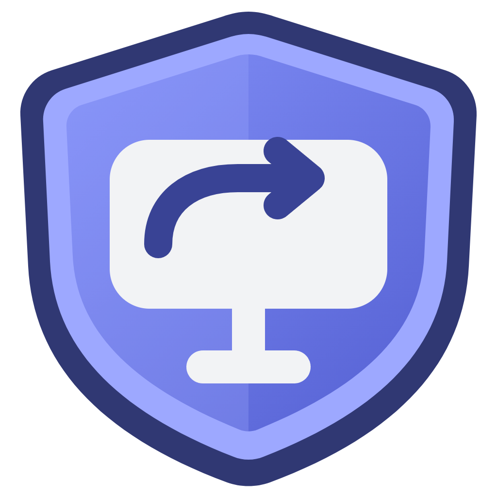

GoLiveBack
Go Live e câmera de volta para aplicação Desktop
Pronto para iniciar.
INATIVOAtive o GoLive para criar uma rota
Configurações avançadas
Verificando o computador…
Proxy remota com login: usuário e senha SOCKS5 podem trafegar sem criptografia até o servidor. Prefira uma proxy local ou um túnel protegido.
Aguardando diagnóstico…